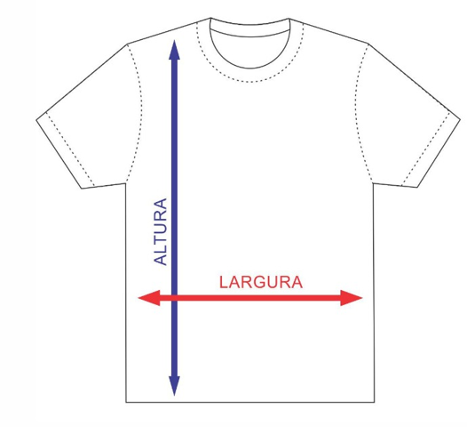

Tabela de tamanhos
Escolha o modelo da peça e compare as medidas com uma roupa que você já utiliza. Todas as medidas abaixo foram fornecidas pela Mult Silk Camisetas.

Desenho original fornecido pela Mult Silk Camisetas. Estenda a peça sobre uma superfície plana, sem esticar o tecido, e confira no desenho como tirar as medidas.
Camiseta tradicional
Medidas em centímetros (cm). Os valores representam a peça pronta, não as medidas do corpo. Para confirmar a escolha, consulte o atendimento.